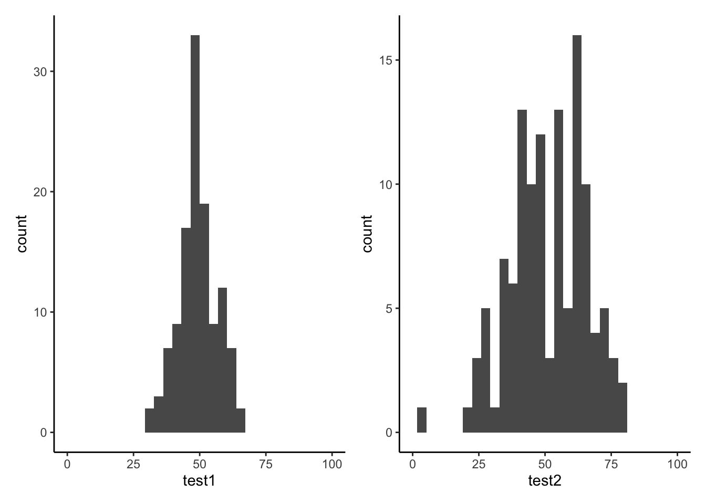

Chapter 3 Handling numeric data
LEARNING OBJECTIVES
- LO1: Understand the appropriate visualization for numeric data.
- LO2: Understand methods to calculate the spread of numeric data.
- LO3: Understand methods to calculate central tendency for numeric data.
In the previous chapter, we looked into describing and visualising categorical data.
We looked at using the mode and median as measures of central tendency, before discussing how for ordered categorical data we could look at the quartiles (the points in rank-ordered data below which falls 25%, 50%, 75% and 100% of the data) to gain an understanding of how spread out the data are.
We now move to looking at measures of central tendency and of spread for numeric data.
3.1 Central tendency
In the following examples, we are going to use some data on 120 participants’ IQ scores (measured on the Wechsler Adult Intelligence Scale (WAIS)), their ages, and their scores on 2 other tests.
It is available at https://uoepsy.github.io/data/dapr1/wechsler.csv
## participant iq age test1 test2
## Length:120 Min. : 58.00 Min. :20.00 Min. :30.00 Min. : 2.00
## Class :character 1st Qu.: 88.00 1st Qu.:29.50 1st Qu.:45.75 1st Qu.:42.00
## Mode :character Median :100.50 Median :37.00 Median :49.00 Median :52.50
## Mean : 99.33 Mean :36.63 Mean :49.33 Mean :51.24
## 3rd Qu.:109.00 3rd Qu.:44.00 3rd Qu.:53.25 3rd Qu.:62.00
## Max. :137.00 Max. :71.00 Max. :67.00 Max. :80.00Mode and median revisited
In the previous chapter we learned about two measures of central tendency:
- Mode: The most frequent value (the value that occurs the greatest number of times).
- Median: The value for which 50% of observations a lower and 50% are higher. It is the mid-point of the values when they are rank-ordered.
We applied both of these to categorical data, but we can also use them for numeric data.
| Mode | Median | Mean | |
|---|---|---|---|
| Nominal (unordered categorical) | ✔ | ✘ | ✘ |
| Ordinal (ordered categorical) | ✔ | ✔ | ? (you may see it sometimes for certain types of ordinal data - there’s no consensus) |
| Numeric Continuous | ✔ | ✔ | ✔ |
The mode of numeric variables is not frequently used. Unlike categorical variables where there are a distinct set of possible values which the data can take, for numeric variables, data can take a many more (or infinitely many) different values. Finding the “most common” is sometimes not possible.
The most frequent value (the mode) of the iq variable is 97:
# take the "wechsler" dataframe %>%
# count() the values in the "iq" variable (creates an "n" column), and
# from there, arrange() the data so that the "n" column is descending - desc()
wechsler %>%
count(iq) %>%
arrange(desc(n))## # A tibble: 53 x 2
## iq n
## <dbl> <int>
## 1 97 7
## 2 108 6
## 3 92 5
## 4 103 5
## 5 105 5
## 6 110 5
## 7 85 4
## 8 99 4
## 9 107 4
## 10 113 4
## # … with 43 more rowsRecall that the median is found by ordering the data from lowest to highest, and finding the mid-point. In the wechsler dataset we have IQ scores for 120 participants. We find the median by ranking them from lowest to highest IQ, and finding the mid-point between the \(60^{th}\) and \(61^{st}\) participants’ scores.
We can also use the median() function we used in the previous chapter:
## [1] 100.5Mean
One of the most frequently used measures of central tendency for numeric data is the mean.
Mean: \(\bar{x}\)
The mean is calculated by summing all of the observations together and then dividing by the total number of obervations (\(n\)).
When we have sampled some data, we denote the mean of our sample with the symbol \(\bar{x}\) (sometimes referred to as “x bar”). The equation for the mean is:
\[\bar{x} = \frac{\sum\limits_{i = 1}^{n}x_i}{n}\]
We can do the calculation by summing the iq variable, and dividing by the number of observations (in our case we have 120 participants):
# get the values in the "iq" variable from the "wechsler" dataframe, and
# sum them all together. Then divide this by 120
sum(wechsler$iq)/120## [1] 99.33333Or, more easily, we can use the mean() function:
## [1] 99.33333Summarising variables
Functions such as mean(), median(), min() and max() can quickly summarise data, and we can use them together really easily in combination with summarise().
Summarise()
The summarise() function is used to reduce variables down to a single summary value.
# take the data %>%
# summarise() it, such that there is a value called "summary_value", which
# is the sum() of "variable1" column, and a value called
# "summary_value2" which is the mean() of the "variable2" column.
data %>%
summarise(
summary_value = sum(variable1),
summary_value2 = mean(variable2)
)Note: Just like with mutate() (introduced in the previous chapter) we don’t have to keep using the dollar sign $, as we have already told it what dataframe to look for the variables in.
So if we want to show the mean IQ score and the mean age of our participants:
# take the "wechsler" dataframe %>%
# summarise() it, such that there is a value called "mean_iq", which
# is the mean() of the "iq" variable, and a value called
# "mean_age" which is the mean() of the "age" variable.
wechsler %>%
summarise(
mean_iq = mean(iq),
mean_age = mean(age)
)## # A tibble: 1 x 2
## mean_iq mean_age
## <dbl> <dbl>
## 1 99.3 36.63.2 Spread
Interquartile range
If we are using the median as our measure of central tendency and we want to discuss how spread out the spread are around it, then we will want to use quartiles (recall that these are linked: the \(2^{nd}\) quartile = the median).
In the previous chapter we briefly introduced how for ordinal data, the 1st and 3rd quartiles give us information about how spread out the data are across the possible response categories. For numeric data, we can likewise find the 1st and 3rd quartiles in the same way - we rank-order all the data, and find the point at which 25% and 75% of the data falls below.
The difference between the 1st and 3rd quartiles is known as the interquartile range (IQR).
( Note, we couldn’t take the difference for ordinal data, because “difference” would not be quantifiable - the categories are ordered, but intervals are between categories are unknown)
In R, we can find the IQR as follows:
## [1] 14.5Alternatively, we can use this inside summarise():
# take the "wechsler" dataframe %>%
# summarise() it, such that there is a value called "median_age", which
# is the median() of the "age" variable, and a value called "iqr_age", which
# is the IQR() of the "age" variable.
wechsler %>%
summarise(
median_age = median(age),
iqr_age = IQR(age)
)## # A tibble: 1 x 2
## median_age iqr_age
## <dbl> <dbl>
## 1 37 14.5Variance
If we are using the mean as our as our measure of central tendency, we can think of the spread of the data in terms of the deviations (distances from each value to the mean).
Recall that the mean is denoted by \(\bar{x}\). If we use \(x_i\) to denote the \(i^{th}\) value of \(x\), then we can denote deviation for \(x_i\) as \(x_i - \bar{x}\).
The deviations can be visualised by the red lines in Figure 3.1.

Figure 3.1: Deviations from the mean
The sum of deviations is always zero
\[\sum\limits_{i = 1}^{n}x_i - \bar{x} \qquad = \qquad 0\]
The mean is like a center of gravity - the sum of the positive deviations (where \(x_i > \bar{x}\)) is equal to the sum of the negative deviations (where \(x_i < \bar{x}\)).
Because deviations around the mean always sum to zero, in order to express how spread out the data are around the mean, we must we consider squared deviations.
Squaring the deviations makes them all positive. Observations far away from the mean in either direction will have large, positive squared deviations. The average squared deviation is known as the variance, and denoted by \(s^2\)
Variance: \(s^2\)
The variance is calculated as the average of the squared deviations from the mean.
When we have sampled some data, we denote the mean of our sample with the symbol \(\bar{x}\) (sometimes referred to as “x bar”). The equation for the variance is:
\[s^2 = \frac{\sum\limits_{i=1}^{n}(x_i - \bar{x})^2}{n-1}\]
We can get R to calculate this for us using the var() function:
## # A tibble: 1 x 1
## variance_iq
## <dbl>
## 1 238.Standard deviation
One difficulty in interpreting variance as a measure of spread is that it is in units of squared deviations. It relects the typical squared distance from a value to the mean.
Conveniently, by taking the square root of the variance, we can translate the measure back into the units of our original variable. This is known as the standard deviation.
Standard Deviation: \(s\)
The standard deviation, denoted by \(s\), is a rough estimate of the typical distance from a value to the mean.
It is the square root of the variance (the typical squared distance from a value to the mean).
\[ s = \sqrt{\frac{\sum\limits_{i=1}^{n}(x_i - \bar{x})^2}{n-1}} \]
We can get R to calculate the standard deviation of a variable sd() function:
## # A tibble: 1 x 2
## variance_iq sd_iq
## <dbl> <dbl>
## 1 238. 15.43.3 Visualising
Boxplots
Boxplots provide a useful way of visualising the interquartile range (IQR). You can see what each part of the boxplot represents in Figure 3.2.

Figure 3.2: Anatomy of a boxplot
We can create a boxplot of our age variable using the following code:
# Notice, we put age on the x axis, making the box plot vertical.
# If we had set aes(y = age) instead, then it would simply be rotated 90 degrees
ggplot(data = wechsler, aes(x = age)) +
geom_boxplot()
Histograms
Now that we have learned about the different measures of central tendency and of spread, we can look at how these influence visualisations of numeric variables.
We can visualise numeric data using a histogram, which shows the frequency of values which fall within bins of an equal width.
# make a ggplot with the "wechsler" data.
# on the x axis put the possible values in the "iq" variable,
# add a histogram geom (will add bars representing the count
# in each bin of the variable on the x-axis)
ggplot(data = wechsler, aes(x = iq)) +
geom_histogram() We can specifiy the width of the bins:
We can specifiy the width of the bins:

Let’s take a look at the means and standard deviations of participants’ scores on the other tests (the test1 and test2 variables):
wechsler %>%
summarise(
mean_test1 = mean(test1),
sd_test1 = sd(test1),
mean_test2 = mean(test2),
sd_test2 = sd(test2)
)## # A tibble: 1 x 4
## mean_test1 sd_test1 mean_test2 sd_test2
## <dbl> <dbl> <dbl> <dbl>
## 1 49.3 7.15 51.2 14.4Tests 1 and 2 have similar means (around 50), but the standard deviation of Test 2 is almost double that of Test 1. We can see this distinction in the visualisation below - the histograms are centered at around the same point (50), but the one for Test 2 is a lot wider than that for Test 1. 
Density curves
In addition to grouping numeric data into bins in order to produce a histogram, we can also visualise a density curve.
For the time being, you can think of the density as a bit similar to the notion of relative frequency which was discussed in the previous chapter, in that for a density curve, the values on the y-axis are scaled so that the total area under the curve is equal to 1. Because there are infinitely many values that numeric variables could take (e.g., 50, 50.1, 50.01, 5.001, …), we could group the data into infinitely many bins. In creating a curve for which the total area underneath is equal to one, we can use the area under the curve in a range of values to indicate the proportion of values in that range.

3.4 Skew
Skewness is a measure of asymmetry in a distribution. Distributions can be positively skewed or negatively skewed, and this influences our measures of central tendency and of spread to different degrees (see Figure 3.3).

Figure 3.3: Skew influences the mean and median to different degrees.
3.5 Glossary
- Interquartile Range (IQR): The \(3^{rd}\) quartile minus the \(1^{st}\) quartile.
- Mean: The sum of all observations divided by the total number of observations. The center of gravity of a variable.
- Deviation: The distance from an observation to the mean value.
- Variance: The average squared distance from observations to the mean value.
- Standard deviation: Square root of variance - can be thought of as the average distance from observations to the mean value.
- Boxplot: Displays the median and the IQR, and any extreme values.
- Histogram: Shows the frequency of values which fall within bins of an equal width.
- Density curve: A curve for reflecting the distribution of a variable, for which the area under the curve sums to 1.
- Skew: A measure of asymmetry in a distribution.
summarise()To summarise variables into a single value according to whatever calculation we give it.IQR()To calculate the interquartile range for a given variable.mean()To calculate the mean of a given variable.sd()To calculate the standard deviation of a given variable.var()To calculate the variance of a given variable.geom_boxplot()To add a boxplot to a ggplot.geom_histogram()To add a histogram to a ggplot.geom_density()To add a density curve to a ggplot.geom_vline()To add a vertical line to a ggplot.
Note: The following functions are introduced in the exercises below.
filter()allows us to filter a dataframe to those rows which meet a given condition. It will return all columns.
select()allows us to choose certain columns in a dataframe. It will return all rows.
3.6 Exercises
130 participants completed an online task in which they saw two sets of coloured words. Participants spoke out loud the colour of each word, and timed how long it took to complete each set. In the first set of words, the words matched the colours they were presented in (e.g., word “blue” was coloured blue). In the second set of words, the words mismatched the colours (e.g., the word “blue” was coloured red, see Figure 3.4). Participants’ recorded their times for each set (matching and mismatching).
Participants were randomly assigned to either do the task once only, or to record their times after practicing the task twice.
You can try out the experiment at https://faculty.washington.edu/chudler/java/ready.html.
The data is available at https://uoepsy.github.io/data/dapr1/strooptask.csv

Figure 3.4: Stroop Task - Color word interference. Images from https://faculty.washington.edu/chudler/java/ready.html
Open a new Rmarkdown file, load the tidyverse package and read in the data.

using summarise(), show the minimum, maximum, mean and median of the times taken to read the matching word set, and then do the same for the mismatching word set.
What we are interested in is the differences between these times. For someone who took 10 seconds for the matching set, and 30 seconds for the mismatching set, we want to record the difference of 20 seconds.
Create a new variable called stroop_effect which is the difference between the mismatching and matching variables.
Hint: Remember we can use the mutate() function to add a new variable. Recall also that we need to reassign this to the name “stroopdata”, to make the changes appear in the environment (rather than just printing them out).
For the stroop_effect variable you just created, produce both a histogram and a density curve.
What is the more appropriate guess for the mean of this variable?
- 6
- 8
- 10
- 12
The code below will produce a histogram of the stroop_effect variable and add a vertical line (geom_vline()) at zero.
Calculate the a measure of central tendency for the stroop_effect variable, and add a line to your histogram at that value.
There are some other variables in the Stroop Task dataset.
Provide some descriptive statistics for the age, height and practice variables.
For each variable, think:
- what type of data is it?
- what do you want to report about it? central tendency? if so, what measure? or do you want to report frequencies?
Think back to Chapter 1, in which we learned how to access different sections of data.
- Assign the name “no_practice” to a new object, which is all of the rows in the “stroopdata” dataframe where the practice variable is equal to “no”.
- Assign the name “practice” to a new object, which is all of the rows in the “stroopdata” dataframe where the practice variable is equal to “yes”.
We learned how to tackle things such Question 7 above by making use of [] and $ to specify rows/columns/conditions which we want to access in a dataframe.
There are two functions which provide similar functionality - filter() and select(). They are part of the same package as mutate() and summarise() and are often used in conjunction with the %>% operator to tell the functions where to find the variables (meaning we don’t need to use data$variable, we can just use the variable name)
filter()
The filter() function allows us to filter a dataframe down to those rows which meet a given condition. It will return all columns.
select()
The select() function allows us to choose certain columns in a dataframe. It will return all rows.
Using filter() and select(),
- Assign the name “no_practice” to a new object, which is all of the rows in the “stroopdata” dataframe where the practice variable is equal to “no”.
- Assign the name “practice” to a new object, which is all of the rows in the “stroopdata” dataframe where the practice variable is equal to “yes”.
- Assign the name “participants” to a new object, which is all of the rows in the “stroopdata” dataframe where the age variable is greater than or equal to 40, but only the id, age, and height variables.